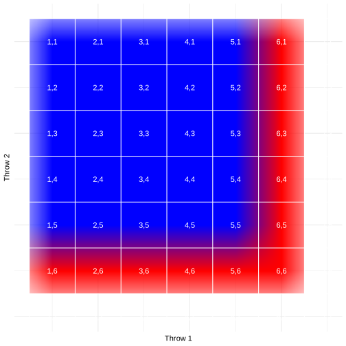

Chapter 6: Probability
Contents
Chapter 6: Probability#
library(dplyr)
library(reshape2)
library(tidyr)
library(ggplot2)
library(knitr)
library(readr)
library(cowplot)
library(janitor)
# load the NHANES data library
library(NHANES)
theme_set(theme_minimal(base_size = 14))
Attaching package: ‘dplyr’
The following objects are masked from ‘package:stats’:
filter, lag
The following objects are masked from ‘package:base’:
intersect, setdiff, setequal, union
Attaching package: ‘tidyr’
The following object is masked from ‘package:reshape2’:
smiths
Attaching package: ‘janitor’
The following objects are masked from ‘package:stats’:
chisq.test, fisher.test
Figure 6.1#
set.seed(12345) # set the seed so that the outcome is consistent
nsamples <- 30000 # how many flips do we want to make?
# create some random coin flips using the rbinom() function with
# a true probability of 0.5
sampDf <-
tibble(
trial_number = seq(nsamples),
outcomes = rbinom(nsamples, 1, 0.5)
) %>%
mutate(mean_probability = cumsum(outcomes) / seq_along(outcomes))
p1 <- sampDf %>%
slice(10:nsamples) %>% # start with a minimum sample of 10 flips
ggplot(aes(x = trial_number, y = mean_probability)) +
geom_hline(yintercept = 0.5, color = "blue", linetype = "dashed") +
geom_line() +
labs(
x = "Number of trials",
y = "Estimated probability of heads"
)
electionReturns <-
read_csv(
"https://raw.githubusercontent.com/statsthinking21/statsthinking21-figures-data/main/03/alabama_election_returns.csv"
) %>%
gather(candidate, pctVotes, -pctResp)
p2 <- electionReturns %>%
ggplot(aes(pctResp, pctVotes, color = candidate)) +
geom_line(aes(linetype=candidate),size = 1) +
scale_color_manual(values = c("#9999CC", "#CC6666")) +
labs(
x = "Percentage of precincts reporting",
y = "Percentage of votes"
) +
theme(legend.position = c(.7,0.8))
plot_grid(p1, p2)
Rows: 19 Columns: 3
── Column specification ────────────────────────────────────────────────────────────────────────────────────────────────────────────────────────────────────────────────
Delimiter: ","
dbl (3): pctResp, Jones, Moore
ℹ Use `spec()` to retrieve the full column specification for this data.
ℹ Specify the column types or set `show_col_types = FALSE` to quiet this message.
Warning message:
“Using `size` aesthetic for lines was deprecated in ggplot2 3.4.0.
ℹ Please use `linewidth` instead.”
Figure 6.2#
imgmtx <-
matrix(0, nrow = 6, ncol = 6)
imgmtx[, 1] <- 1
imgmtx[6, ] <- 1
plot <-
imgmtx %>%
melt() %>%
ggplot(aes(Var1, Var2, fill = value)) +
scale_fill_gradientn(colours=c("#0000FFFF","#FFFFFFFF","#FF0000FF")) +
geom_raster(interpolate = FALSE)
for (i in seq(0.5, 6.5)) {
plot <-
plot + geom_hline(yintercept = i, color = "white")
plot <-
plot + geom_vline(xintercept = i, color = "white")
for (j in seq(0.5, 6.5)) {
plot <-
plot + annotate(
"text",
x = i + 0.5, y = 6.5 - j, # j + 0.5,
label = sprintf("%d,%d", i + 0.5, j + 0.5),
color = "white")
}
}
plot +
theme_minimal() +
theme(
axis.line = element_blank(),
axis.text.x = element_blank(),
axis.text.y = element_blank(),
axis.ticks = element_blank(),
legend.position = "none"
) +
labs(
x = "Throw 1",
y = "Throw 2"
)

Table 6.1#
# compute cumulative probability distribution for Curry's free throws
curry_df <- tibble(
numSuccesses = seq(0, 4)
) %>%
mutate(
Probability = dbinom(numSuccesses, size = 4, prob = 0.91),
CumulativeProbability = pbinom(numSuccesses, size = 4, prob = 0.91)
)
kable(curry_df, caption='Simple and cumulative probability distributions for number of successful free throws by Steph Curry in 4 attempts.', digits=4)
Table: Simple and cumulative probability distributions for number of successful free throws by Steph Curry in 4 attempts.
| numSuccesses| Probability| CumulativeProbability|
|------------:|-----------:|---------------------:|
| 0| 0.0001| 0.0001|
| 1| 0.0027| 0.0027|
| 2| 0.0402| 0.0430|
| 3| 0.2713| 0.3143|
| 4| 0.6857| 1.0000|
Table 6.2#
# Summarize NHANES data for diabetes and physical activity
# drop duplicated IDs within the NHANES dataset
NHANES_diabetes_activity <-
NHANES %>%
distinct(ID, .keep_all = TRUE) %>%
drop_na(PhysActive, Diabetes)
diabetes_summary <- NHANES_diabetes_activity %>%
count(Diabetes) %>%
mutate(
prob = n / sum(n)
)
physactive_summary <- NHANES_diabetes_activity %>%
count(PhysActive) %>%
mutate(
prob = n / sum(n)
)
all_summary <- data.frame(Answer=diabetes_summary$Diabetes,
N_diabetes=diabetes_summary$n,
P_diabetes=diabetes_summary$prob,
N_PhysActive=physactive_summary$n,
P_PhysActive=physactive_summary$prob)
kable(all_summary, caption='Summary data for diabetes and physical activity')
Table: Summary data for diabetes and physical activity
|Answer | N_diabetes| P_diabetes| N_PhysActive| P_PhysActive|
|:------|----------:|----------:|------------:|------------:|
|No | 4893| 0.8989528| 2472| 0.4541613|
|Yes | 550| 0.1010472| 2971| 0.5458387|
Table 6.3#
# compute joint probabilities for diabetes and physical activity
NHANES_diabetes_stats_by_activity <-
NHANES_diabetes_activity %>%
count(Diabetes, PhysActive) %>%
mutate(
prob = n / sum(n)
)
kable(NHANES_diabetes_stats_by_activity, caption='Joint probabilities for Diabetes and PhysActive variables.')
Table: Joint probabilities for Diabetes and PhysActive variables.
|Diabetes |PhysActive | n| prob|
|:--------|:----------|----:|---------:|
|No |No | 2123| 0.3900423|
|No |Yes | 2770| 0.5089105|
|Yes |No | 349| 0.0641191|
|Yes |Yes | 201| 0.0369282|
Table 6.4#
# compute probabilities for mental health and physical activity
NHANES_adult <-
NHANES %>%
dplyr::filter(
Age >= 18,
!is.na(PhysActive),
!is.na(DaysMentHlthBad)
) %>%
mutate(badMentalHealth = DaysMentHlthBad > 7,
badMentalHealth = case_when(
badMentalHealth == TRUE ~ "Bad Mental Health",
badMentalHealth == FALSE ~ "Good Mental Health"
))
NHANES_mentalhealth_by_physactive_counts <- NHANES_adult %>% tabyl(PhysActive, badMentalHealth) %>% adorn_totals(c("row", "col"))
# kable(NHANES_mentalhealth_by_physactive_counts, caption='Counts for each combination of mental vs. physical health in the NHANES dataset.')
total_n <- NHANES_mentalhealth_by_physactive_counts[3,4]
# there doesn't seem to be a simple way to do this in R
NHANES_mentalhealth_by_physactive_p <- NHANES_mentalhealth_by_physactive_counts[,2:4]/NHANES_mentalhealth_by_physactive_counts[3,4]
NHANES_mentalhealth_by_physactive_p <- NHANES_mentalhealth_by_physactive_p %>%
mutate(PhysActive=NHANES_mentalhealth_by_physactive_counts[,1])
NHANES_mentalhealth_by_physactive_p <- NHANES_mentalhealth_by_physactive_p[, c('PhysActive', "Bad Mental Health", "Good Mental Health", "Total" )]
kable(NHANES_mentalhealth_by_physactive_p, caption='Proportional results for analysis of mental vs. physical health.')
Table: Proportional results for analysis of mental vs. physical health.
|PhysActive | Bad Mental Health| Good Mental Health| Total|
|:----------|-----------------:|------------------:|---------:|
|No | 0.0938106| 0.3743475| 0.4681581|
|Yes | 0.0702461| 0.4615958| 0.5318419|
|Total | 0.1640567| 0.8359433| 1.0000000|
Table 6.5#
total_n <- NHANES_mentalhealth_by_physactive_counts[3,4]
# there doesn't seem to be a simple way to do this in R
NHANES_mentalhealth_by_physactive_condp <- NHANES_mentalhealth_by_physactive_counts
for (i in 1:3){
NHANES_mentalhealth_by_physactive_condp[i, 2:4] <- NHANES_mentalhealth_by_physactive_condp[i, 2:4] / NHANES_mentalhealth_by_physactive_condp[i, 4]
}
kable(NHANES_mentalhealth_by_physactive_condp, caption='Conditional probabilities for mental health given physical health.')
Table: Conditional probabilities for mental health given physical health.
|PhysActive | Bad Mental Health| Good Mental Health| Total|
|:----------|-----------------:|------------------:|-----:|
|No | 0.2003823| 0.7996177| 1|
|Yes | 0.1320808| 0.8679192| 1|
|Total | 0.1640567| 0.8359433| 1|